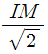
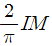
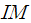
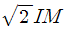
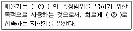

전기기능사 (2007-04-01 기출문제)
1과목: 전기 이론
1. 다음 중 반도체로 만든 PN 접합은 주로 무슨 작용을 하는가?
- 증폭작용
- 발진작용
- 정류작용
- 변조작용
(정답률: 89%)

2. 다음 중 전류와 자장의 세기와의 관계는 어떤 법칙과 관계가 있는가?
- 패러데이의 법칙
- 플레밍의 왼손법칙
- 비오-사바르의 법칙
- 앙페르의 오른나사의 법칙
(정답률: 71%)
3. 자속밀도 0.5wb/m2의 자장안에 자장과 직각으로 20㎝의 도체를 놓고 이것에 10A의 전류를 흘릴 때 도체가 50㎝ 운동한 경우의 한 일은 몇 J인가?
- 0.5
- 1
- 1.5
- 5
(정답률: 41%)
4. 전장의 세기에 대한 단위로 맞는 것은?
- m/V
- V/m2
- V/m
- m2/V
(정답률: 11%)
5. Ɛ=100sin(377t-π/5)[V]의 파형 주파수는 약 몇 ㎐인가?
- 50
- 60
- 80
- 100
(정답률: 72%)
6. 가장 일반적인 저항기로 세라믹 봉에 탄소계의 저항체를 구워 붙이고, 여기에 나선형으로 홈을 파서 원하는 저항값을 만든 저항기는?
- 금속 피막 저항기
- 탄소피막 저항기
- 가변 저항기
- 어레이 저항기
(정답률: 70%)
7. R=6Ω, Xc=8Ω 일 때 임피던스 Z=6-j8Ω 으로 표시되는 것은 일반적으로 어떤 회로인가?
- RL 직렬회로
- RL 병렬회로
- RC 병렬회로
- RC 직렬회로
(정답률: 55%)
8. 히스테리시스 곡선이 횡축과 만나는 점의 값은 무엇을 나타내는가?
- 자속밀도
- 자화력
- 보자력
- 잔류자기
(정답률: 76%)
9. 다음 중 전기 화학 당량에 대한 설명 중 옳지 않은 것은?
- 전기화학 당량의 단위는 [g/c]이다.
- 화학 당량은 원자량을 원자가로 나눈 값이다.
- 전기화학 당량은 화학 당량에 비례한다.
- 1[g]당량을 석출하는데 필요한 전기량은 물질에 따라 다르다.
(정답률: 37%)
10. 어떤 물질이 정상 상태보다 전자의 수가 많거나 적어져서 전기를 띠는 현상을 무엇이라 하는가?
- 방전
- 전기량
- 대전
- 하전
(정답률: 87%)
11. 자체 인덕턴스 0.2H의 코일에 전류가 0.01초 동안에 3A로 변화하였을 때 이 코일에 유도되는 기전력은 몇 V인가?
- 40
- 50
- 60
- 70
(정답률: 76%)
12. I=Imsinωt[A]인 교류의 실효값은?




(정답률: 57%)
13. 10-2F의 콘덴서에 100V의 전압을 가할 때 충전되는 전하는 몇 C인가?
- 0.1
- 1
- 1.5
- 2
(정답률: 71%)
14. 선간전압 210V, 선전류 10A의 Y-Y 회로가 있다. 상전압과 상전류는 각각 얼마인가?
- 약 121V, 5.77A
- 약 121V, 10A
- 약 210V, 5.77A
- 약 210V, 10A
(정답률: 95%)
15. R=10Ω, C=318μF의 병렬 회로에 주파수 f=60㎐, 크기 V=200V의 사인파 전압을 가할 때 콘덴서에 흐르는 전류 Ic 값은 약 몇 A인가?
- 24
- 31
- 41
- 55
(정답률: 38%)
16. 정전용량 C1=120μF, C2=30μF가 직렬로 접속되었을 때 합성정전 용량은 몇 μF인가?
- 14
- 24
- 50
- 150
(정답률: 64%)
17. 전하의 성질에 대한 설명 중 옳지 않은 것은?
- 전하는 가장 안정한 상태를 유지하려는 성질이 있다.
- 같은 종류의 전하끼리는 흡인하고 다른 종류의 전하끼리는 반발한다.
- 낙뢰는 구름과 지면 사이에 모인 전기가 한꺼번에 방전되는 현상이다.
- 대전체의 영향으로 비대전체에 전기가 유도된다.
(정답률: 80%)
18. 다음 ( ① ) 과 ( ② )에 들어갈 내용으로 알맞은 것은?(오류 신고가 접수된 문제입니다. 반드시 정답과 해설을 확인하시기 바랍니다.)

- ① 전압계, ② 병렬
- ① 전류계, ② 병렬
- ① 전압계, ② 직렬
- ① 전류계, ② 직렬
(정답률: 55%)
19. 자기 인덕턴스 10mH의 코일에 50㎐, 314V의 교류전압을 가했을 때 몇 A의 전류가 흐르는가? (단, 코일의 저항은 없는 것으로 하며, π=3.14로 계산한다.)
- 10
- 31.4
- 62.8
- 100
(정답률: 37%)
20. 다음 중 무효전력의 단위는 어느 것인가?
- W
- Var
- kW
- VA
(정답률: 78%)
2과목: 전기 기기
21. 변압기의 여자 전류가 일그러지는 이유는 무엇 때문인가?
- 와류(맴돌이 전류) 때문에
- 자기 포화와 히스테리시스 현상 때문에
- 누설 리액턴스 때문에
- 선간 정전용량 때문에
(정답률: 51%)
22. 권수비 30의 변압기의 1차에 6600V를 가할 때 2차 전압은 몇 V인가?
- 220
- 380
- 420
- 660
(정답률: 76%)
23. 다중 중권의 극수 P인 직류기에서 전기자 병렬 회로수 a는 어떻게 되는가?
- a = P
- a = 2
- a = 2P
- a = 3P
(정답률: 55%)
24. 3상 유도 전동기의 공급 전압이 일정하고 주파수가 정격 값보다 수 % 감소할 때 다음 현상 중 옳지 않은 것은?
- 동기 속도가 감소한다.
- 철손이 증가한다.
- 누설 리액턴스가 증가한다.
- 역률이 나빠진다.
(정답률: 34%)
25. 동기 전동기에서 난조를 방지하기 위하여 자극면에 설치하는 권선을 무엇이라 하는가?
- 제동권선
- 계자권선
- 전기자권선
- 보상권선
(정답률: 64%)
26. 변압기유로 쓰이는 절연유에 요구되는 성질이 아닌 것은?
- 점도가 클 것
- 비열이 커 냉각 효과가 클 것
- 절연재료 및 금속재료에 화학작용을 일으키지 않을 것
- 인화점이 높고 응고점이 낮을 것
(정답률: 64%)
27. 교류 동기 서보 모터에 비하여 효율이 훨씬 좋고 큰 토크를 발생하여 입력되는 각 전기 신호에 따라 규정된 각도만큼씩 회전하며 회전자는 축 방향으로 자화된 영구 자석으로서 보통 50개 정도의 톱니로 만들어져 있는 것은?
- 전기 동력계
- 유도 전동기
- 직류스테핑모터
- 동기전동기
(정답률: 62%)
28. 다음 정류 방식 중에서 맥동 주파수가 가장 많고 맥동률이 가장 작은 정류 방식은 어느 것인가?
- 단상 반파식
- 단상 전파식
- 3상 반파식
- 3상 전파식
(정답률: 44%)
29. 다음 중 단락비가 큰 동기 발전기를 설명하는 것으로 옳은 것은?
- 동기 임피던스가 작다.
- 단락 전류가 작다.
- 전기자 반작용이 크다.
- 전압변동률이 크다.
(정답률: 41%)
30. 교류 전압의 실효값이 200V일 때 단상 반파 정류에 의하여 발생하는 직류 전압의 평균값은 약 몇 V인가?
- 45
- 90
- 1⑤
- 110
(정답률: 55%)
31. 반송보호 계전방식의 이점을 설명한 것으로 맞지 않는 것은?
- 다른 방식에 비해 장치가 간단하다.
- 고장 구간의 고속도 동시 차단이 가능하다.
- 고장 구간의 선택이 확실하다.
- 동작을 예민하게 할 수 있다.
(정답률: 30%)
32. 직류기에서 전기자 반작용을 방지하기 위한 보상권선의 전류 방향은 어떻게 되는가?
- 전기자 권선의 전류방향과 같다.
- 전기자 권선의 전류방향과 반대이다.
- 계자권선의 전류 방향과 같다.
- 계자권선의 전류 방향과 반대이다.
(정답률: 43%)
33. 동기 발전기의 병렬운전에 필요한 조건이 아닌 것은?
- 기전력의 주파수가 같을 것
- 기전력의 크기가 같을 것
- 기전력의 용량이 같을 것
- 기전력의 위상이 같을 것
(정답률: 98%)
34. 슬립 4%인 유도 전동기의 등가 부하 저항은 2차 저항의 몇 배인가?
- 5
- 19
- 20
- 24
(정답률: 42%)
35. 유도 전동기에서 비례추이를 적용할 수 없는 것은?
- 토크
- 1차 전류
- 부하
- 역률
(정답률: 34%)
36. 유도 전동기에서 원선도 작성시 필요하지 않은 시험은?
- 무부하시험
- 구속시험
- 저항측정
- 슬립측정
(정답률: 54%)
37. 동기 전동기를 송전선의 전압 조정 및 역률 개선에 사용한 것을 무엇이라 하는가?
- 동기이탈
- 동기조상기
- 댐퍼
- 제동권선
(정답률: 64%)
38. 다음 중 변압기의 원리와 가장 관계가 있는 것은?
- 전자유도 작용
- 표피 작용
- 전기자 반작용
- 편자 작용
(정답률: 63%)
39. 다음 중 자기 소호 제어용 소자는?
- SCR
- TRIAC
- DIAC
- GTO
(정답률: 62%)
40. 어느 변압기의 백분율 저항 강하가 2%, 백분율 리액턴스 강하가 3%일 때 역률(지역률) 80%인 경우의 전압 변동률은 몇 %인가?
- 0.2
- 1.6
- 1.8
- 3.4
(정답률: 42%)
3과목: 전기 설비
41. 제 1종 접지공사에 사용하는 접지선의 최소 굵기는 몇 mm2인가?(관련 규정 개정전 문제로 여기서는 기존 정답인 3번을 누르면 정답 처리됩니다. 자세한 내용은 해설을 참고하세요.)
- 2.5
- 4.0
- 6.0
- 25
(정답률: 49%)
42. 철근 콘크리트주에 완금을 고정 시키려면 어떤 밴드를 사용하는가?
- 암 밴드
- 지선밴드
- 래크밴드
- 암타이밴드
(정답률: 54%)
43. 다음 그림 기호의 명칭은?
- 천장은폐배선
- 바닥은폐배선
- 노출배선
- 바닥면노출배선
(정답률: 77%)
44. 다단의 크로스 암이 설치되고 또한 장력이 클 때와 H주일 때 보통 지선을 2단으로 부설하는 지선은?
- 보통지선
- 공동지선
- 궁지선
- Y지선
(정답률: 47%)
45. 사람이 접촉될 우려가 있는 곳에 시설하는 경우 접지극은 지하 몇 ㎝이상의 깊이에 매설하여야 하는가?
- 30
- 45
- 50
- 75
(정답률: 69%)
46. 공장, 사무실, 학교, 상점등의 옥내에 시설하는 전등은 부분조명이 가능하도록 시설하여야 하는데 이때 전등군은 몇 등 이내로 하는 것이 바람직한가?
- 6
- 8
- 10
- 12
(정답률: 39%)
47. 다음 중 접지의 목적으로 알맞지 않은 것은?
- 감전의 방지
- 전로의 대지전압 상승
- 보호 계전기의 동작확보
- 이상 전압의 억제
(정답률: 67%)
48. 다음 중 600V 비닐 절연 전선을 나타내는 약호는?
- IV
- DV
- IC
- NRC
(정답률: 53%)
49. 전선을 기구 단자에 접속할 때 진동 등의 영향으로 헐거워질 우려가 있는 경우에 사용하는 것은?
- 압착단자
- 코드 페스너
- 십자머리 볼트
- 스프링 와셔
(정답률: 80%)
50. 다음 철탑의 사용목적에 의한 분류에서 서로 인접하는 경간의 길이가 크게 달라 지나친 불평형 장력이 가해지는 경우 등에는 어떤 형의 철탑을 사용하여야 하는가?
- 직선형
- 각도형
- 인류형
- 내장형
(정답률: 39%)
51. 저압배선 중의 전압강하는 간선 및 분기회로에서 각각 표준전압의 몇 % 이하로 하는 것을 원칙으로 하는가?
- 2
- 4
- 6
- 8
(정답률: 30%)
52. 배관의 직각 굴곡 부분에 사용하는 것은?
- 로크너트
- 절연부싱
- 플로어박스
- 노멀밴드
(정답률: 50%)
53. 절연 전선의 피복에 “154KV NRV”라고 표기되어 있다. 여기서 “NRV"는 무엇을 나타내는 약호인가?
- 형광등 전선
- 고무 절연 폴리에틸렌 시스 네온전선
- 고무절연 비닐 시스 네온전선
- 폴리에틸렌절연 비닐 시스 네온전선
(정답률: 59%)
54. 다음 중 고압에 속하는 것은?(관련 규정 개정전 문제로 여기서는 기존 정답인 3번을 누르면 정답 처리됩니다. 자세한 내용은 해설을 참고하세요.)
- 교류 440V
- 직류 600V
- 교류 700V
- 직류 700V
(정답률: 64%)
55. 한 수용 장소의 인입선에서 분기하여 지지물을 거치지 아니하고 다른 수용 장소의 인입구에 이르는 부분의 전선을 무엇이라 하는가?
- 가공전선
- 가공지선
- 가공인입선
- 연접인입선
(정답률: 64%)
56. 다음 중 금속 전선관을 박스에 고정 시킬 때 사용되는 것은 어느 것인가?
- 새들
- 부싱
- 로크너트
- 클램프
(정답률: 61%)
57. 화약고 등의 위험장소의 배선 공사에서 전로의 대지 전압은 몇 V이하로 하도록 되어 있는가?
- 300
- 400
- 500
- 600
(정답률: 60%)
58. 조명기구의 배광에 의한 분류 중 40~60% 정도의 빛이 위쪽과 아래쪽으로 고루 향하고 가장 일반적인 용도를 가지고 있으며 상·하 좌우로 빛이 모두 나오므로 부드러운 조명이 되는 조명 방식은?
- 직접조명방식
- 반 직접 조명방식
- 전반 확산 조명방식
- 반 간접 조명방식
(정답률: 59%)
59. 다음 중 인류 또는 내장주의 선로에서 활선공법을 할 때 작업자가 현수애자 등에 접촉되어 생기는 안전사고를 예방하기 위해 사용하는 것은?
- 활선커버
- 가스개폐기
- 데드엔드커버
- 프로텍터차단기
(정답률: 46%)
60. 다음 중 전선의 슬리브 접속에 있어서 펜치와 같이 사용되고 금속관 공사에서 로크너트를 조일 때 사용하는 공구는 어느 것인가?
- 펌프 플라이어 (pump plier)
- 히키(hickey)
- 비트 익스텐션(bit extension)
- 클리퍼(clipper)
(정답률: 35%)